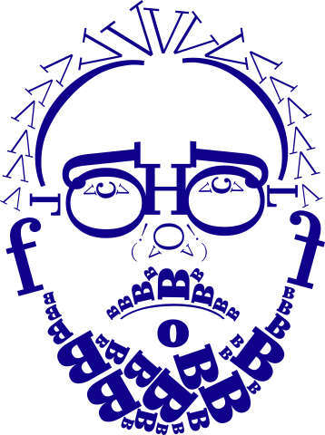

Шрифт разработан в 2015 году студией CSTM Fonts
Культурный опыт,
закодированный
под современность
Юрий Остроменский, дизайнер
«Идея шрифта Kazimir впервые пришла мне в голову, когда на меня упала дореволюционная книга Петра Николаевича Полевого „История русской словесности с древнейших времён до наших дней“ издательства А.Ф. Маркса из семейной библиотеки моей жены Даши».
«От шрифта из книги Полевого мы взяли главные отношения — контрастность, тон набора, ритм, интонацию».
Ю
О
Илья Рудерман, дизайнер
«Появление Kazimir совпало с появлением студии CSTM Fonts, поэтому он стал нашим первым шрифтом, созданным специально на продажу».
И
Р
Light
Light Italic
Regular
Regular Italic
Medium
Medium Italic
Bold
Bold Italic
Black
Black Italic
5
начертаний
26
языков
Английский, Африканский, Белорусский, Болгарский, Венгерский, Галисийский, Голландский, Датский, Ирландский, Испанский, Итальянский, Латышский, Литовский, Норвежский, Польский, Португальский, Русский, Сербский, Словенский, Узбекский (лат), Украинский, Финский, Французский, Чешский, Шведский, Эстонский
Графические особенности шрифта
зесечка
капля
концевой элемент
петля
концевой элемент
хвост
Пропорциональный шрифт
Высокий контраст
Закрытая апертура
Антиква
Х*1,35 px
Х*1,24 px
Х px
Х*1,24 px
Х*1,18 px
Х*1,01 px
Х*1,08 px
Y*1,37 px
Y px
А
Б
В
Г
Д
Е
Ё
Ж
З
И
Й
К
Л
М
Н
О
П
Р
С
Т
У
Ф
Х
Ц
Ч
Ш
Щ
Ъ
Ы
Ь
Э
Ю
Я
а
б
в
г
д
е
ё
ж
з
и
й
к
л
м
н
о
п
р
с
т
у
ф
х
ц
ч
ш
щ
ъ
ы
ь
э
ю
я
ЦИФРЫ
0
1
2
3
4
5
6
7
8
9
!
?
,
.
"
„
(
)
{
}
[
]
~
@
#
№
$
%
^
&
*
-
_
+
=
/
\
;
:
<
>
Альтернативные начертания графемы букв
Типографика — это искусство
Театр для вашего текста.
Колизей
Амфитеатр, памятник древнеримской архитектуры, является одним из самых величественных сооружений древнего мира, сохранившихся до наших дней.
Примерьте шрифт Kazimir на свой текст
Создатель лендинга
Брусова Полина
Контакты
pokobrusova@edu.hse.ru
Лендинг создан исключительно в учебных и исследовательских целях